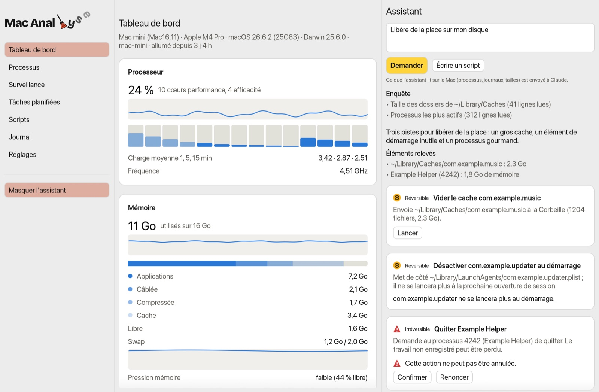

Lecture
Mesurer, lister, lire les journaux. L'assistant enquête avec ça, seul, autant qu'il veut.
du ps log show pmset -g log
Une app macOS · Rust & egui · v0.3
Il regarde ce qui encombre votre Mac, vous dit pourquoi il chauffe, fait le ménage quand vous le lui demandez. Et il peut tout remettre en place.
La règle de la maison
rm.Un fichier supprimé part à la Corbeille. Un réglage est sauvegardé avant d'être changé.sudo dans votre dos.Une action irréversible est expliquée, puis attend votre clic. Une tâche planifiée ou un appel MCP ne peut pas en lancer.mac-anal check, lancé par launchd, sans réseau.Avant chaque action
Mesurer, lister, lire les journaux. L'assistant enquête avec ça, seul, autant qu'il veut.
du ps log show pmset -g log
Un clic, et c'est fait. Un clic dans le journal, et c'est défait.
vider un cache · quitter un processus · couper un élément de démarrage
Jamais automatique. Expliqué d'abord, confirmé par vous ensuite, et seulement dans l'app.
sudo · suppression définitive
Ce qu'il fait, en huit phrases que vous pourriez lui écrire
pourquoi mon Mac chauffe depuis hier ?
L'assistant enchaîne seul des outils en lecture seule, puis répond avec ce qu'il a trouvé : un extrait de log, un processus, une taille. Chaque étape reste visible.
pmset -g logaucune mise en veille depuis 21 hps -Ao pcpu,commmds_stores à 94 %log show --last 1dSpotlight indexe « Archives » en boucleExemple d'enquête
libère de la place sur mon disque
Pas de conseil à recopier dans un terminal : un plan d'actions prêtes, chacune avec son effet annoncé. L'app les exécute de façon déterministe.
Vider les DerivedData de Xcode
~/Library/Developer/Xcode/DerivedData · 18,4 Go · part à la Corbeille
Désactiver « Updater » au démarrage
LaunchAgent sauvegardé avant le changement
trouve les vidéos de plus de 2 Go dans Téléchargements
Pour ce que le catalogue ne couvre pas, il écrit un script zsh. L'app le résume, le lance d'abord à blanc dans un bac à sable en lecture seule, et ne l'exécute pour de vrai qu'après votre accord.
#!/bin/zsh
find ~/Downloads -type f \
\( -name '*.mov' -o -name '*.mp4' \) \
-size +2G -exec du -h {} +sandbox-exec · 0 fichier écrit · pas de réseau · pas de sudo
préviens-moi si le disque passe sous 10 %
La phrase devient une règle que vous relisez avant qu'elle soit enregistrée. Ensuite, launchd la vérifie chaque minute, même Mac Anal fermé, sans IA.
mac-anal checkchaque lundi, vide les DerivedData de plus de 30 jours
Un vrai LaunchAgent dans ~/Library/LaunchAgents, que vous voyez avant qu'il soit chargé. Une tâche ne lance que des actions réversibles ou des scripts de votre bibliothèque.
<key>StartCalendarInterval</key>
<dict>
<key>Weekday</key> <integer>1</integer>
<key>Hour</key> <integer>9</integer>
</dict>prochaine exécution : lundi 9:00
qu'est-ce que tu as fait cette semaine ?
Chaque action s'inscrit avec son origine (vous, une tâche, MCP), la mesure avant et après, et un bouton pour l'annuler. Essayez.
Cache de Safari vidé
lun. 9:00 · tâche planifiée · 2,1 Go → 0 o
Spotlight : « Archives » exclu
mar. 14:12 · vous · CPU 94 % → 6 %
Processus « Updater » quitté
mer. 18:40 · MCP · mémoire 1,3 Go libérée
montre-moi le disque dans la barre des menus
Des widgets en direct dans la barre des menus, dans l'ordre que vous choisissez. Un clic ouvre le détail et des actions rapides, réversibles seulement.
(depuis Claude Code) combien de place prend Docker ?
mac-anal mcp est un serveur MCP. Claude Desktop et Claude Code lisent les mesures et le journal, et lancent les actions réversibles, journalisées avec l'origine « MCP ». Les irréversibles restent dans l'app.
claude mcp add mac-anal -- \
/chemin/vers/mac-anal/app/target/release/mac-anal mcpLa fenêtre

Capture de la v0.3 sur des données d'exemple, faite par l'app elle-même : mac-anal --screenshot.
Installer
Il faut macOS et Rust 1.95 ou plus récent, installé avec rustup (le rust de Homebrew est trop ancien). L'assistant s'appuie sur Claude : ce qu'il lit sur le Mac pour répondre (processus, journaux, tailles) lui est envoyé. Le reste de l'app fonctionne sans.
$ brew install rustup
$ git clone https://github.com/C2-POLY/mac-anal
$ cd mac-anal/app && cargo run